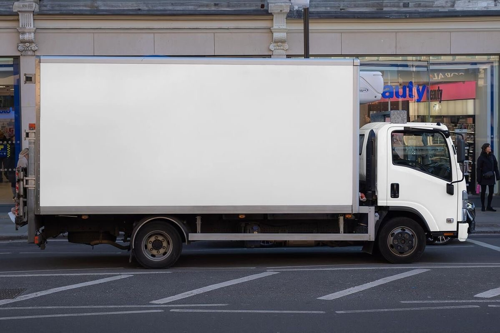
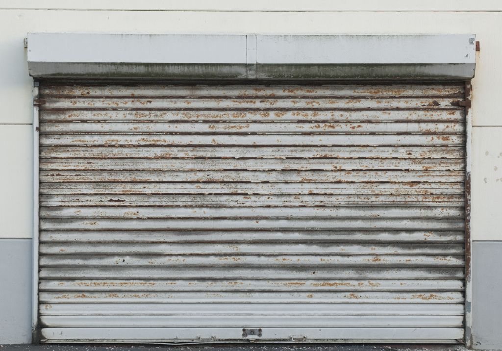
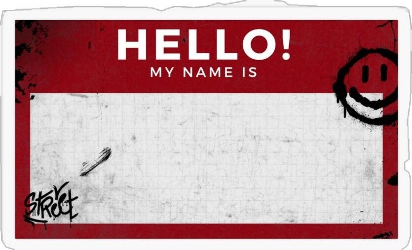

在設計系的第一年，我接觸到許多過去從未想像過的創作方式。從視覺設計到互動媒體，每一門課都在打開我看世界的視角。
這個作品集不只是作業的集合，而是我對「學習是什麼」這個問題的回答。每一件作品背後都有一段掙扎、一次頓悟、一個「啊，原來如此」的瞬間。
我決定用網頁來呈現這些成果，因為我相信設計必須被體驗，而不只是被觀看。從排版到動畫，從互動到敘事，這個網站本身就是一件作品。
透過設計課程，發現自己對視覺敘事有強烈熱情，開始思考如何將概念轉化為有溫度的設計。
從 Figma 到 Webflow，從 GitHub 到 AI 協作，每一個工具的學習都是一次思維的擴張。
這不只是成果展示，更是一段自我探索的旅程——關於我是誰，以及我想成為什麼樣的設計師。
 牆面
牆面
卡車
鐵捲門
貼紙牆一切從一張白紙開始。我學習如何將腦中模糊的概念轉化為具體的設計方向。透過大量草圖、心智圖與初步研究，開始理解設計不只是讓東西「好看」，而是解決問題、創造溝通。
好的設計來自廣泛的視覺養分。我大量研究國內外設計案例、排版理論與互動設計原則。Behance、Dribbble、Awwwards 成為日常精神食糧，AI 工具讓我能更快速整合靈感。
從 Figma 原型到 Webflow 上線，從 GitHub 版本控制到程式碼的第一行——實作是最痛苦也最令人興奮的時刻。每一個 bug 都是一堂課，uiverse 與 Lovable 更讓我體驗了 AI 輔助建構介面的可能性。
設計永遠沒有「完成」，只有「更好的版本」。在反覆的測試與自我審視中，學會接受批評、轉化回饋並持續迭代。這個階段磨練了細節敏感度與執行韌性，每一次微調都讓作品更接近心中的理想。